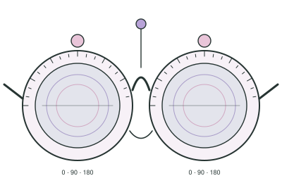
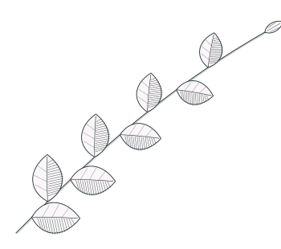
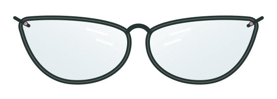
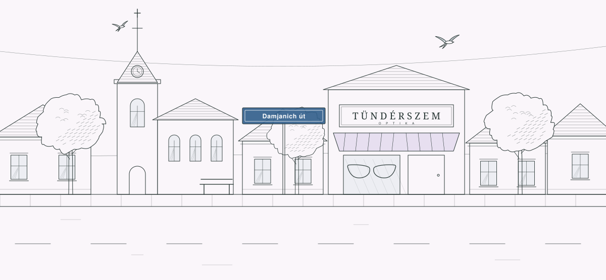
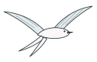
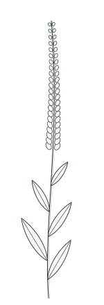

Tündérszem Optika — Újszász
Láss tisztán. Érezd magad ragyogóan.
Személyre szabott látásvizsgálat, stílusos szemüvegek és figyelmes kiszolgálás Újszász szívében.
Rólunk · 2020 óta Újszászon
Több mint szemüveg. Egy új nézőpont.

Hiszünk abban, hogy a megfelelő szemüveg nemcsak az éles látásról szól, hanem a kényelmes mindennapokról és a magabiztos megjelenésről is.
Újszászi optikánkban figyelmes kiszolgálással segítünk megtalálni a hozzád illő megoldást — a vizsgálattól a keret kiválasztásán át a kész szemüveg beállításáig.
- Alapítva
- 2020
- Cím
- Damjanich út 14.
- Nyitva
- H–P 9–17
Szolgáltatások
Amiben segítünk
Hat dolog, amivel bejöhetsz hozzánk. Ha nem tudod, melyik kell, hívj fel nyugodtan, és együtt kitaláljuk.
-
01
Szemvizsgálat
Megnézzük, hogyan látsz távolra és közelre, és hogy a mostani szemüveged megfelel-e még. Az eredményt érthetően elmondjuk.
Részletek
Időpontot telefonon tudsz kérni. Ha van régi szemüveged, hozd magaddal — sokat segít az összehasonlításban.
-
02
Szemüvegkészítés
A kiválasztott keretbe a látásodhoz illő lencse kerül, a kész szemüveget pedig úgy állítjuk be, hogy kényelmesen üljön.
Részletek
Távoli, közeli és multifokális szemüveg is készül; a lencse típusát a vizsgálat és a mindennapjaid alapján együtt választjuk ki.
-
03
Szemüvegkeretek
Női, férfi és gyermek keretek, klasszikus és modern formák. Próbálj fel nyugodtan többet is — megmondjuk, melyik áll jól.
Részletek
A keretválasztásnál az arcforma mellett a lencse erőssége is számít: erősebb dioptriához más keret ideális, mint gyengébbhez.
-
04
Szemüvegjavítás
Kilazult csavar, elferdült szár, kopott orrpárna — sok apró hiba megjavítható, mielőtt új szemüveg kellene. Hozd be, megnézzük.
Részletek
Hogy egy javítás megoldható-e, és mennyi időbe telik, a szemüveg megtekintése után tudjuk megmondani.
-
05
Kontaktlencsék
Kontaktlencsék és a hozzájuk való ápolószerek. Kérdezz bátran, melyik illik a te mindennapjaidhoz.
Részletek
A használt lencsédet és ápolószeredet érdemes telefonon előre egyeztetni.
-
06
Szemüveglencsék
Multifokális, bifokális, fényre sötétedő és vékonyított lencsék. Elmondjuk, melyik mire jó.
Részletek
- Multifokális — távol, köztes és közel egyetlen lencsében, látható választóvonal nélkül.
- Bifokális — két látótávolság egy lencsében, a közeli rész elkülönül.
- Fényre sötétedő — napfényben besötétedik, bent újra világos.
- Vékonyított — erősebb dioptriánál vékonyabb, könnyebb lencse.
Szemüvegek
A stílus, ami rád talál.
A klasszikus eleganciától a karakteres, modern formákig — fedezd fel a hozzád illő szemüvegkeretet.


Női szemüvegek
Felfelé ívelő külső sarkok, finom színek és vékonyabb vonalak — a macskaszem-forma kiemeli a tekintetet.
Rajzolt keretformák. A valódi kínálat fotói az üzletből kerülnek ide — árak és készlet nélkül.
Egy kis kísérlet
Lásd a különbséget.
Húzd el a lencsét: balra elmosódott, jobbra éles a Damjanich út.

Csak illusztráció — nem mutatja meg a látásodat, és nem ígér egy adott lencsével elérhető eredményt. Erről a szemvizsgálat mond biztosat.
Miért hozzánk
Jó kezekben a látásod.

- I.
Személyes figyelem
Nem sietünk. Annyi időt szánunk rád, amennyi egy jó döntéshez kell, és mindent érthetően elmondunk.
- II.
Széles keretválaszték
Női, férfi és gyermek keretek, a klasszikus formáktól a bátrabb, modern darabokig.
- III.
Gondos szemüvegkészítés
A szemüveg akkor jó, ha a lencse pontos és a keret kényelmes. Mindkettőre ugyanúgy figyelünk.
- IV.
Helyi, könnyen elérhető
Újszász központjában, a Damjanich úton — hétköznap 9 és 17 óra között várunk.
Vélemények
Akik már minket választottak.
Barátságos, segítőkész kiszolgálás, szakszerű és korrekt tanácsadás. Tiszta, jól felszerelt üzlet, széles választék és megfizethető árak.
Udvarias kiszolgálás, modern és jól felszerelt üzlet, gyors, szakszerű munka. Minőségi szemüvegek, nagyon jó ár-érték arány.
Kedves, türelmes kiszolgálás · alapos vizsgálat · széles keretválaszték · korrekt árak.
A két vélemény lényegét saját szavainkkal foglaltuk össze. A végleges oldalra az ügyféllel egyeztetve a Google- és Facebook-értékelések kerülnek, szó szerint.
Kapcsolat
Az éles látás itt kezdődik.
Időpontot telefonon tudsz kérni, hétköznap 9 és 17 óra között. Ha épp nem tudsz telefonálni, írj e-mailt.

- Telefon
- +36 30 146 4644
- Cím
- 5052 Újszász, Damjanich út 14.
Megnyitás a Google Térképen
| Hétfő | 9:00–17:00 |
|---|---|
| Kedd | 9:00–17:00 |
| Szerda | 9:00–17:00 |
| Csütörtök | 9:00–17:00 |
| Péntek | 9:00–17:00 |
| Szombat | zárva |
| Vasárnap | zárva |